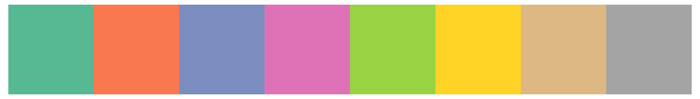

#LOAD PACKAGES
library(tidyverse)
#install.packages("sf") - note some students are getting a pop-up when they install the sf package for the first time. Select the "no" option when it pops up in your console.
library(sf)
#some students are needing into install the rgeos package seperately as well
#library(rgeos)Maps with maps and sf
Before we get started, some context:
Ris fantastic for spacial analysis (not covered in this class… look for classes related to spacial statistics)Ris great for interactive data visualization (vialeafletorshiny… more on this on Thursday)Ris okay at spacial data visualization (creating maps).- There are many different packages in
Rfor creating maps. I’ve found that different packages perform best for different maps. We will talk about a few different ones today. - If you have a highly map-centric project, there is nothing wrong with working in ArcGIS or QGIS if you find the mapping tools in R insufficient. There are many recent improvements with new packages (like
sp,rgdalandrgeos) which profiles much of the functionality of GIS packages! Exciting! (not very beginner friendly - requires familiarity with GIS concepts)
- There are many different packages in
Using the sf package
Vector data for maps are typically encoded using the “simple features” standard produced by the Open Geospatial Consortium. The sf package developed by Edzer Pebesma provides an excellent toolset for working with such data, and the geom_sf() and coord_sf() functions in ggplot2 are designed to work together with the sf package.
For our first example, we will be working with a dataset of North Carolina that is built in to the sf package.
demo(nc, ask = FALSE, echo = FALSE)You should notice that the nc dataset is now saved in your R environment. This dataset contains information about Sudden Infant Death Syndrome (SIDS) for North Carolina counties, over two time periods (1974-78 and 1979-84). Let’s take a look at that dataset.
Each row represents a county in North Carolina. This data frame contains the following columns:
AREACounty polygon areas in degree unitsPERIMETERCounty polygon perimeters in degree unitsCNTY_Internal county IDNAMECounty namesFIPSCounty IDFIPSNOCounty IDCRESS_IDCressie papers IDBIR74births, 1974-78SID74SID deaths, 1974-78NWBIR74non-white births, 1974-78BIR79births, 1979-84SID79SID deaths, 1979-84NWBIR79non-white births, 1979-84geominformation needed to plot the map for each county
Let’s begin by simply plotting the map using geom_sf: Let’s begin by simply plotting the map using geom_sf. Note that you don’t need to specify the x- or y-axes – sf figures that out for you.
Let’s pretty it up:
Cloropleth maps
What is a cloropleth map?
A choropleth map is a type of thematic map where areas (such as countries, states, or regions) are shaded or colored based on data values. It’s commonly used to visualize statistical information, such as population density, election results, or income levels, by using different shades or colors to represent varying data ranges.

Suppose we want to shade each of these counties, based on the number of births in 1974.
Color Palettes
Qualitative Color Palettes
| Best for… | Categories (unordered) |
| Examples | Species, Groups, Brands |
RColorBrewer Palettes |
"Set1", "Dark2", "Paired" |
| Example R Code | scale_fill_brewer(palette = "Set1") |
wesanderson Palettes |
"GrandBudapest1", "Darjeeling1", "Moonrise2" |
| Example R Code | scale_fill_manual(values = wes_palette("GrandBudapest1")) |

Sequential Color Palettes
| Best for… | Ordered, continuous data |
| Examples | Temperature, Population Density |
RColorBrewer Palettes |
"Blues", "Reds", "Greens" |
| Example R Code | scale_fill_brewer(palette = "Blues") |
viridis Palettes |
"viridis", "magma", "plasma", "cividis" |
| Example R Code | scale_fill_viridis_c(option = "magma") |
| Build your Own | scale_fill_gradientn(c("red", "yellow")) |

Note: Be sure that higher values are encoded with the darkest colors!
Diverging Color Palettes
| Best for… | Data with a central midpoint |
| Examples | Election Results, Anomaly Detection |
RColorBrewer Palettes |
"RdBu", "Spectral" |
| Example R Code | scale_fill_brewer(palette = "RdBu") |
| Build your Own | scale_fill_manual(values = c("red", "orange")) |
Some general guidelines when choosing color palettes:
✅ Match palette type to data type
✅ Choose colorblind-friendly palettes when designing for general audiences
✅ Limit colors to avoid overwhelming the reader - for categortical data limit the number of distinct colors to 5-8 max (beyond that, consider grouping)
✅ Consider the meaning of colors in your audience’s cultural context.
🔴 Avoid: Using blue for land in maps
Customizing Cholepleth maps
library(RColorBrewer)